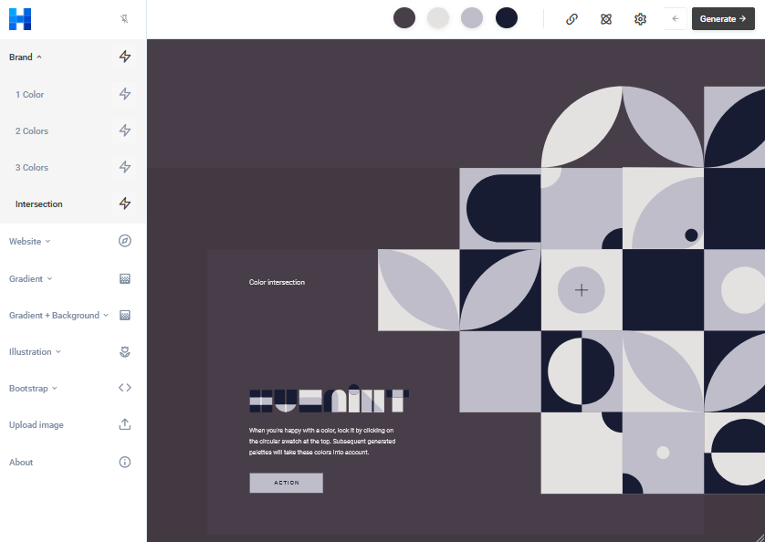

Choosing colors
Working with colors a great tool to use is "Huemint.com". The program allows you to play around with colors. It can generate colorthemes for you and you can see how the colors look on a website.

Image from Huemint.com